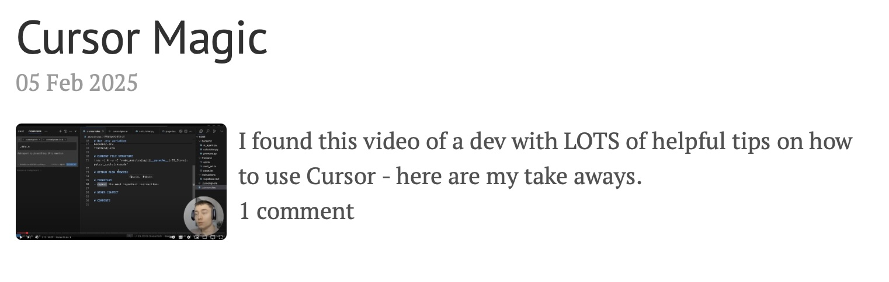

Solid Comments In Static Website
February 11, 2025TL;DR: I added comments to my static website. Here’s how I did it - including some technical details. I researched amongst different possible solutions for the most solid one, integrated it for all posts and added a counter of the number of comments in the post overview page.
Selecting a solution
As i planned to play around with the new Deep Research Model from OpenAI I gave it a spin with this topic: feel free to read here. Overall the research was helpful and I ended up using Giscus for the comments. Partly because it felt the most robust and reliable, partly because I had really bad expoerience with disqus some years ago.
The choice was based on the set of criteria I gave to the model. Here are the most important ones:
- No self-hosted server – I don’t want to manage (and pay 😉) a server.
- Data portability – the comments can exported.
- Privacy-friendly – no extra trackers or ads beyond what I already use (e.g. Google Analytics).
- Markdown support – allow rich formatting (code blocks, etc.) suited for technical discussions.
- Spam protection – has measures to reduce spam, especially if allowing anonymous or unauthenticated comments.
The tools that Deep Research analyzed were
- Giscus
- Utterances
- Staticman
- Commento
- Hyvor Talk
- Disqus
- Some self made solutions
Integrating Giscus
In the follow up to it’s research I asked the model to give me a step by step guide on how to integrate the solution. This was far less reliable than the first research, but still helpful.
Here is the executive summary (the details are in the chat I had with the AI):
- Step 1: Enable GitHub Discussions for Your Repository.
- Step in between, that the AI missed to mention: Install giscus for all or some of your repos. Here
- Step 2: Install Giscus and Configure It
- Step 3: Add Giscus to Your Jekyll Post Template. Worked like a charme, even though you will have to replace my Repo name and ID with your’s…
- Step 4: Style Giscus to Match Lanyon Theme. I skipped this one, as the styling looked pretty good naked to me.
- Step 5: Display Comment Count in Post Summaries
- Step 6: Commit and Push Changes - Duh…
- Step 7: Test Your Setup
Adding the comment counter
After fiddling around a bit and smoothing the edges everything worked fine. But there was one feature I miussed: I wanted to see the number of comments a blog post has in the post overview page.

So I spun up ChatGPT again and got another research result. The rough steps are:
-
Step 1: Add a Placeholder for Comment Count. In my
post_preview.htmlI added a<span>that actually needed to be a bit different from what the AI suggested:html <span class="comment-count" data-giscus-comments="{{ post.url }}"> <span class="comment-num">Counting comments...</span> </span> -
Step 2: Add JavaScript to Fetch the Comment Count. I added a script that fetches the comment count from the GitHub Discussions API and updates the comment count. The script suggested needed some fixes and ended up in this Event Listener. Don’t be surprised by the two lines with dashes (—-) at the top, I’ll explain them below… Noteworthy here are
- Dealing with the
accessToken(explained below) - This argument of the grahQL query:
categoryId: "DIC_kwDONYRp_c4Cm0cH". This is the ID of the category that contains the discussions of the repository. - Note: What helped me for debugging & fixing this function is the Github GraphQL Explorer.
- Step 3: Include the JavaScript in Your Jekyll Site. In my case I added this script reference at the bottom of the
default.htmllayout file. - Step 4: Test the Comment Count. After some testing and fixing, it worked eventually locally.
The following aspects kept me busy an hour or two:
- The
accessToken, where and how to get it - How to get the access token published to Github w/o the token-scanner and protector kicking in